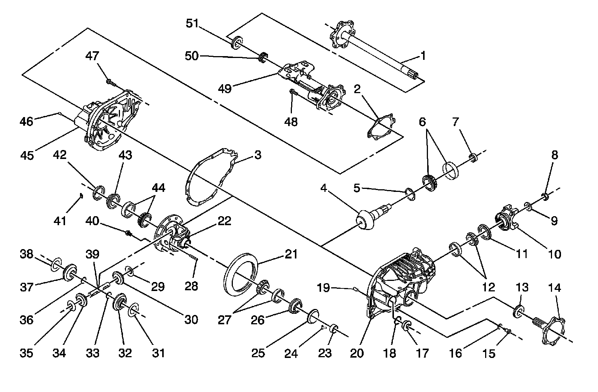

Front Drive Axle Disassembled Views (8.25 Inch (F4WD))
Front Drive Axle Disassembled Views (8.25 Inch (F4wd))
Front Drive Axle:

1 - Output Shaft
2 - Tube Gasket
3 - Carrier Gasket
4 - Drive Pinion
5 - Pinion Shim
6 - Pinion Head Bearing Assembly
7 - Pinion Spacer
8 - Pinion Flange Nut
9 - Pinion Flange Washer
10 - Pinion Flange Assembly
11 - Pinion Seal Assembly
12 - Pinion Tail Bearing Assembly
13 - Output Shaft Seal Assembly
14 - Output Shaft
15 - Drain Plug
16 - Drain Plug Washer
17 - Fill Plug
18 - Fill Plug O-ring
19 - Carrier Dowel Pin
20 - Carrier Housing
21 - Ring Gear
22 - Differential Case
23 - Output Shaft Bearing Assembly
24 - Differential Adjuster T-Lock
25 - Differential Case Adjuster Sleeve
26 - Differential Case Adjuster
27 - Differential Case Bearing Assembly
28 - Differential Pinion Cross Pin Lock
29 - Differential Pinion Thrust Washer
30 - Differential Pinion Gear
31 - Differential Side Thrust Washer
32 - Differential Side Gear
33 - Output Shaft Snap Ring
34 - Differential Pinion Gear
35 - Differential Pinion Thrust Washer
36 - Output Shaft Snap Ring
37 - Differential Side Gear
38 - Differential Side Thrust Washer
39 - Differential Pinion Cross Pin
40 - Ring Gear Bolt
41 - Differential Adjuster T-Lock
42 - Differential Case Adjuster Sleeve
43 - Differential Case Adjuster
44 - Differential Case Bearing Assembly
45 - Carrier Cover
46 - Tube Dowel Pin
47 - Carrier Bolt
48 - Tube Bolt
49 - Tube
50 - Axle Shaft Bearing Assembly
51 - Axle Shaft Seal Assembly